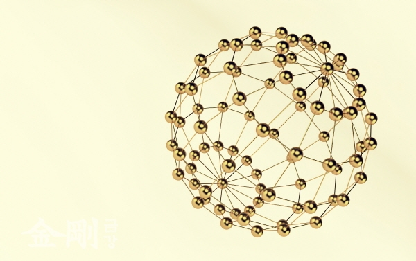

불교의 가장 핵심적인 교리는 연기법(緣起法)이다.
부처님은 인생과 우주의 진리를 깨치신 분이며, 그 진리의 내용 은 바로 ‘연기’이다. 부처님은 경에서 이 연기법을 아는 것이 바로 부처님을 보는 것이라고 하셨다. 앞으로 설명할 5 온(五蘊), 12처(十二處) 등 일체법(一切法)의 분류, 삼법인(三法印)과 사성제(四聖諦)도 모두 연기법을 다양한 관 점에서 정리한 가르침이다. 불교 교리가 한없이 복잡한 듯하지만, 아무리 복잡하더라도 연기법의 테두리를 벗어나 지 않는다. 12연기(十二緣起) 등 여러 가지 종류의 연기법이 경전에 있지만 이에 대한 자세한 논의는 이 장의 마지 막 부분에서 다루기로 하고 우선 연기법의 기본 원리에 대해서 알아보자.
연기란 모든 것은 원인과 조건이 있어서 생겨나고 원인과 조건이 없어지면 소멸한다는 것이다. 부처님께서는 이를 아래의 시로 간명히 표현하신다.
이것이 있으므로 저것이 있고 此有故彼有
이것이 생기므로 저것이 생긴다. 此生故彼生
이것이 없으면 저것도 없고 此無故彼無
이것이 사라지면 저것도 사라진다. 此滅故彼滅
모든 것은 홀로 존재하지 않고 상호관계 속에서 존재한다는 진리이다. 존재의 상황이 어떻게 바뀌더라도 이것과 저 것의 의존관계와 상관관계에서 벗어날 수 없다는 것이다. 여기에서 ‘이것이 있으므로 저것이 있고’와 ‘이것이 생기므 로 저것이 생긴다’라는 구절로써 존재의 발생을 설명하고 있다. 그리고 ‘이것이 없으면 저것도 없고’와 ‘이것이 사라 지면 저것도 사라진다.’라는 구절로써 존재의 소멸을 설명하고 있다. 모든 존재는 그것을 형성시키는 원인과 조건에 의해서만이, 그리고 상호관계에 의해서만이 생성되기도 하고 소멸되기도 한다는 것을 이렇게 설명하고 있다.
결국 연기법이란 존재의 ‘생성과 소멸의 관계성(關係性)’을 뜻한다. 생성과 소멸의 과정에서 항상 서로 의지하여 관 계를 맺고 있다 하여 연기법을 ‘상의성(相依性)의 법칙’이라 말하기도 한다. 모든 존재는 그 존재를 성립시키는 여러 가지 원인이나 조건에 의해서 생겨나게 된다. 서로는 서로에게 원인이 되기도 하고 조건이 되기도 하면서 함께 존재 하게 되는 것이다. 즉 모든 존재는 전적으로 상대적이고 상호의존적이다.